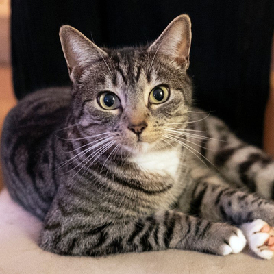

Cats
Nadalee
- Breed: white tabby
- Age: unknown
- Sex: Male
- Nadalee does enjoy a good meal of canned cat food, soft blankets to burrow in, bird watching, and a touch of catnip now and again. He may function in your home like a quiet roommate who keeps to himself. He would likely prefer a calm household and he needs nothing fancy, only understanding people who will let him go at his own pace.
- description modified from https://www.lollypopanimals.org/profile/55023743
- get along with other cats/dogs/children: Gets along with other cats and children, but not dogs
Ascott
-
- Breed: Unknown
- Age: 5 years old
- Sex: Male
- This petite feline named Ascott is excitedly anticipating a loving home. He's had a bit of bad luck, but his lucked changed when he was rescued from the streets. Since he was a stray, we don't know his history. At the shelter he enjoys being talked to, receiving gentle scritches on his thin frame, eating wet cat food, and exploring his surroundings. Ascott would do better in a calmer household. Make an appointment today to meet Ascott!
- description modified from
- get along with other cats/dogs/children: Gets along with other cats and dogs, but not children
Squiggles
-
- Breed: Domestic Shorthair
- Age: 3 years 2 months
- Sex: Female
- Squiggles is a declawed cat who was found wandering the streets. She is on the shy side, so a calmer environment would be best for her. Squiggles loves being sung to, cuddling in soft blankets, and being fed treats (like all-meat baby food) off your fingers. She's a social eater and loves it when you hang out with her at meal time. Patient humans are exactly what Squiggles needs. Is that you? If you don't mind giving a feline extra pampering while she learns to trust you, then Squiggles might be the perfect feline for you. Make an appointment to meet this delicate lady.
- get along with other cats/dogs/children: Gets along with other cats, dogs, and children
Tait
-
- Breed: Domestic Shorthair
- Age: 2 Years
- Sex: Female
- Hi friends, meet Tait! Patience is a virtue with her.Tait was recently a mother. Her kittens have all been adopted, so now it's her turn to find a loving home. She takes things slow, like warming up to humans. Once you win her trust, you'll be rewarded with a gentle and loving ginger cat. Tait likes getting soft scratches around her head and ears, napping in small cardboard boxes, eating tiny bits of tuna, and being sung to. Make an appointment to meet the captivating Tait soon.
- get along with other cats/dogs/children: Gets along with other cats and children, but not dogs
Keller
- 
- Breed: Domestic Shorthair
- Age: 5 years, 8 months
- Sex: Female
- Keller is a pretty girl who is still trying to understand that people are her friends. It may take her a while to warm up but once she does she's sweet and accepts pets. The way to her heart is yummy treats and lots of patience. Come in to meet this shy lady and give her a chance in your home!
- get along with other cats/dogs/children: Gets along with other cats and dogs, but not children